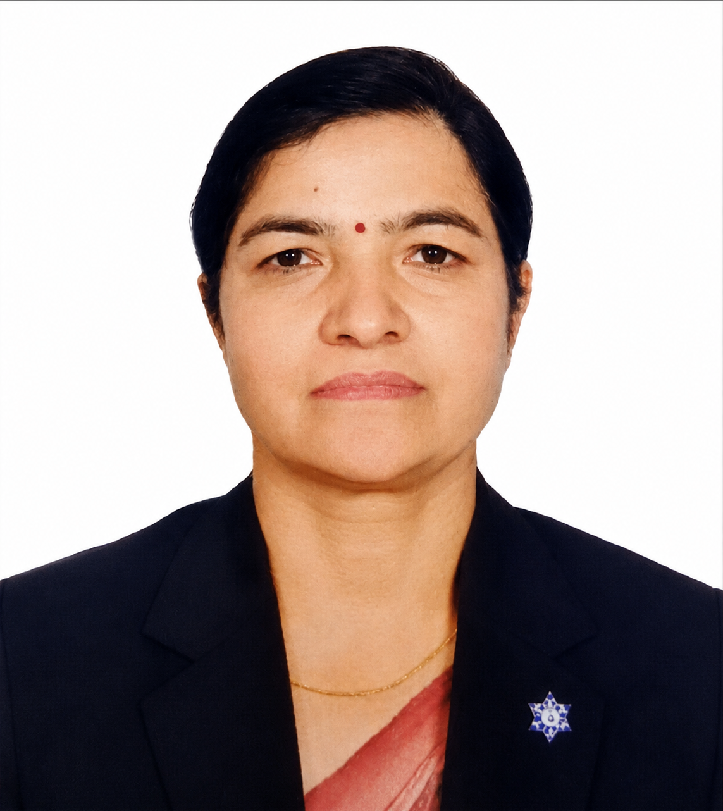

Learn about our vision, mission, values, principles, and the story behind our commitment to advancing education through research, innovation, and culturally responsive pedagogy.
Global Academy of Education Research was established with a single, powerful mission: to advance education through rigorous research, innovative teacher training, and culturally responsive pedagogy. We believe that education is not just a subject—it is a way of understanding the world, deeply connected to culture, art, and everyday life. It is the foundation upon which individuals build their identities, communities shape their futures, and societies transform themselves.
The journey of GAER began with a vision to bridge the gap between traditional cultural knowledge and modern educational practice. We recognized that education systems around the world, including Nepal, often overlook the rich cultural heritage and indigenous knowledge that learners bring to the classroom. This oversight not only disconnects students from their cultural roots but also limits the potential for meaningful, engaged, and transformative learning. By placing culture at the heart of education, we aim to create learning experiences that are not only academically rigorous but also deeply personal and culturally affirming.
We are focused on all streams of education, from early childhood to higher education and teacher professional development. Mainly, our work is grounded in ethnomathematics—the study of mathematical practices embedded in cultural traditions, artifacts, and lived experiences. Ethnomathematics offers a powerful lens through which we can see mathematics not as a foreign or abstract discipline, but as a living, breathing part of everyday life. By connecting school mathematics with indigenous knowledge systems—such as the geometric patterns in traditional Nepali architecture, the symmetrical designs of Dhaka textiles, or the mathematical reasoning in ritual practices—we make learning more meaningful, accessible, and socially just for all students.
Founded by Dr. Kharika Devi Parajuli, a distinguished teacher educator with over 24 years of experience, GAER bridges the gap between traditional cultural knowledge and modern educational practice. Dr. Parajuli's vision has always been to create an institution that not only conducts cutting-edge research but also translates that research into tangible, transformative action in classrooms and communities. Her leadership is driven by a deep commitment to equity, inclusion, and the belief that every learner deserves an education that respects their identity and nurtures their potential.
Today, GAER works with schools, universities, government agencies, and international development partners to design and implement transformative educational initiatives. Our work spans curriculum development, teacher training, policy advisory, and community engagement. We believe that sustainable change in education requires collaboration—bringing together educators, researchers, policymakers, and communities to co-create solutions that are locally relevant and globally informed. Through our partnerships, we strive to build a more equitable, inclusive, and culturally responsive education system that prepares learners not just for exams, but for life.
The guiding framework that shapes our work and defines our commitment to education.
To be a globally recognized center of excellence in education research, teacher professional development, and educational innovation.
Advance research in ethno-education, ethnomodelling, and culturally grounded pedagogy; empower teachers with practical, research‑based skills for transformative classroom practice; and collaborate with national and international partners to shape equitable and inclusive education systems.
Cultural Responsiveness – Respecting and integrating indigenous knowledge; Excellence – Delivering research‑based, high‑quality services; Innovation – Embracing technology and creative pedagogy; Social Justice – Making education accessible to all.
Respect – Honoring diverse cultures, knowledge systems, and perspectives; Integrity – Conducting research and practice with honesty and transparency; Excellence – Striving for the highest quality in all our endeavors; Impact – Creating meaningful and lasting change in education.
Dr. Parajuli is a highly accomplished teacher educator with over 24 years of professional experience in education. She has served as Head of the Mathematics Department in a private secondary school, senior teacher in public secondary schools, academic trainer, and researcher.
Her academic journey includes a Ph.D. in Mathematics Education from Tribhuvan University (2022), an M.Phil. in Mathematics Education from Kathmandu University (2017), and a Master's degree from Tribhuvan University (2006). Her doctoral research, "Connecting Vedic, Ethno, and School Mathematics," explores how local cultural knowledge and artifacts can be systematically transformed into powerful pedagogical designs.
Dr. Parajuli serves as Executive Member of the Nepal Mathematical Society (Gandaki Province), Director of the Centre for Innovation, Research, Development and Training (CIRDT), Treasurer of the Education Society Nepal, and Life Member of Women of Nepal in Mathematical Sciences (WoNiMS).
She has published extensively in national and international journals and contributed a chapter to a prestigious Springer book on ethnomathematics. Her research focuses on the intersection of ethnomathematics, ethnomodelling, and culturally responsive pedagogy, with a particular emphasis on connecting indigenous knowledge systems with formal mathematics education.
She has presented at conferences in India, the Philippines, and virtually with global scholars including Prof. Milton Rosa and Prof. Daniel Orey. Her work has been recognized internationally for its contribution to the field of ethnomathematics and culturally responsive education.
Beyond her research, Dr. Parajuli is deeply committed to teacher professional development. She has designed and facilitated numerous training programs for mathematics teachers across Nepal, empowering them with innovative pedagogical strategies and research-based practices to transform their classrooms.

Our signature frameworks, publications, conference presentations, and professional development programs.
N‑MELODY is a proprietary pedagogical framework developed by Dr. Kharika Devi Parajuli that integrates Critical Pedagogy, Reflective Practice, and Transformative Education to create socially just, culturally relevant, and deeply engaging mathematics learning experiences.
The framework empowers educators to:
These publications reflect our commitment to advancing knowledge in ethnomathematics, ethnomodelling, and culturally responsive mathematics education.
Peer-ReviewedOur conference presentations demonstrate our active engagement with the global academic community, sharing insights and best practices in culturally responsive mathematics education.
National and InternationalWe design and deliver high‑impact training programs for educators across Nepal:
Our training programs empower teachers with innovative pedagogical strategies, technology integration skills, and research-based practices to transform their classrooms and improve student learning outcomes.
📚 Teacher Training